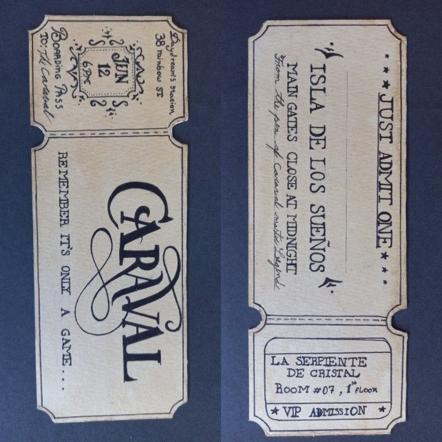
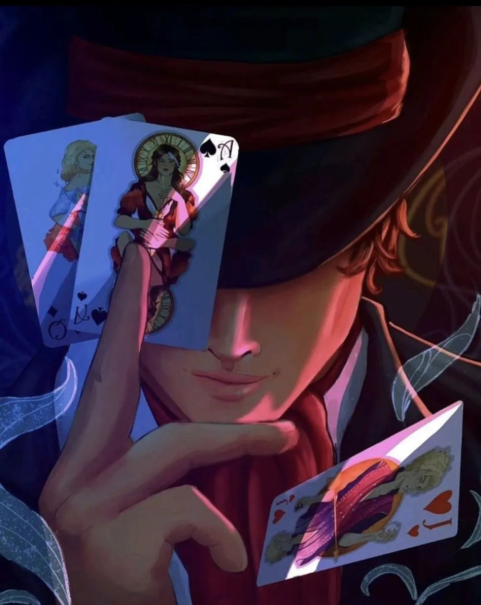

Legend anuncia novo Caraval após anos de silêncio e promete o jogo mais perigoso de todos

VALENDA — Depois de anos sem realizar um grande espetáculo, Legend, o misterioso mestre do Caraval, surpreendeu o mundo ao anunciar uma nova edição do jogo.
O anúncio aconteceu durante a madrugada, quando centenas de pessoas encontraram misteriosos envelopes vermelhos em frente às suas casas. Nenhum mensageiro foi visto entregando os convites.
Diferentemente dos convites tradicionais, os novos cartões não informavam o local do evento. Também não havia data, horário ou instruções para os participantes.
No centro de cada convite havia apenas uma frase escrita em tinta dourada:
"O Caraval começa quando você acreditar que ele começou."
Uma nova cidade será transformada em palco
De acordo com informações divulgadas pela organização, o novo Caraval não será realizado em uma ilha ou em um local isolado.
Desta vez, uma cidade inteira será transformada no palco do espetáculo.
Ruas poderão mudar de aparência durante a noite, estabelecimentos comuns serão transformados em atrações e alguns moradores poderão receber personagens dentro do próprio jogo sem sequer saber disso.
A organização ainda não revelou qual cidade será utilizada.
Uma fonte ligada ao evento afirmou que nem todos os participantes saberão quando o jogo realmente começou.
"Esse é justamente o objetivo. Se todos soubessem quando começa, seria fácil demais."

Legend promete novas regras
Em uma rara declaração, Legend teria confirmado que o novo espetáculo contará com regras completamente diferentes das edições anteriores.
Até agora, apenas três regras foram divulgadas.
Primeira: ninguém poderá abandonar o jogo antes do final.
Segunda: os participantes não poderão confiar completamente em ninguém.
Terceira: nem tudo que acontece durante o Caraval será uma ilusão.
A terceira regra foi a que mais chamou atenção.
Questionado sobre o significado da frase, Legend teria respondido apenas:
"Algumas coisas são perigosas demais para serem apenas parte de um jogo."
O prêmio será diferente
Outra novidade está relacionada ao prêmio.
Diferentemente das edições anteriores, o vencedor não receberá uma quantia em dinheiro ou uma recompensa tradicional.
Segundo a organização, o prêmio será:
"Aquilo que o vencedor mais deseja."
A frase provocou diversas especulações entre os possíveis participantes.
Quando questionado se isso significava que o prêmio seria diferente para cada jogador, Legend teria apenas sorrido.
"Talvez."
Convites começam a desaparecer
Poucas horas após o anúncio, relatos de pessoas que receberam os convites começaram a surgir.
Alguns afirmam que as palavras escritas nos cartões mudam dependendo de quem está lendo.
Outros dizem que o convite mostra uma mensagem completamente diferente quando colocado diante de um espelho.
A organização não confirmou nenhuma dessas informações.
Curiosamente, diversos dos primeiros convites encontrados desapareceram durante a madrugada.
Legend deixa um último aviso
Antes de desaparecer novamente, Legend teria divulgado uma última mensagem sobre o novo Caraval.
"Vocês pediram outro jogo. Eu decidi dar a vocês algo muito melhor."
Abaixo da mensagem havia apenas uma última frase:
"Quando as luzes se acenderem, o Caraval terá começado. Quando elas se apagarem, descubram por si mesmos se ainda estão jogando."
A data e o local do novo Caraval continuam sendo mantidos em segredo.
Por enquanto, os únicos detalhes confirmados são poucos: haverá um novo jogo, Legend estará novamente no comando e, como sempre, ninguém poderá ter certeza absoluta de onde termina a magia e começa a realidade.